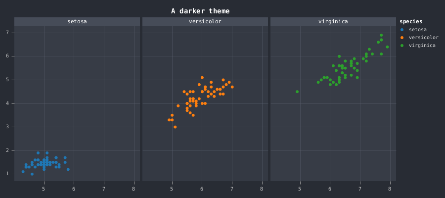
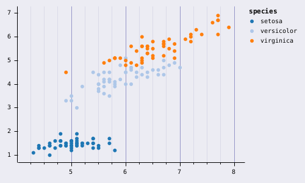
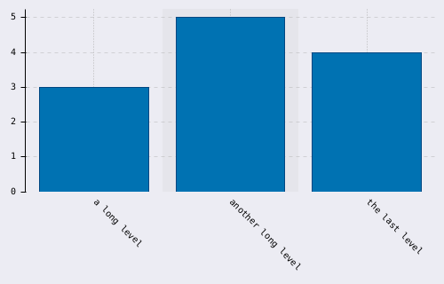
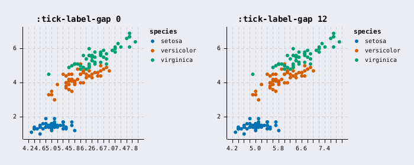
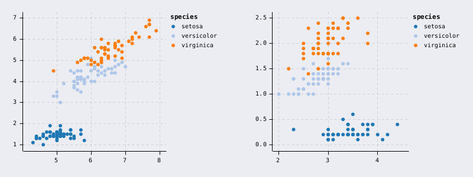
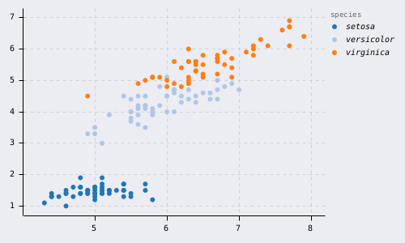
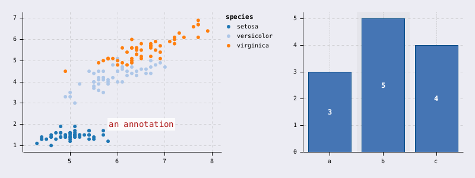
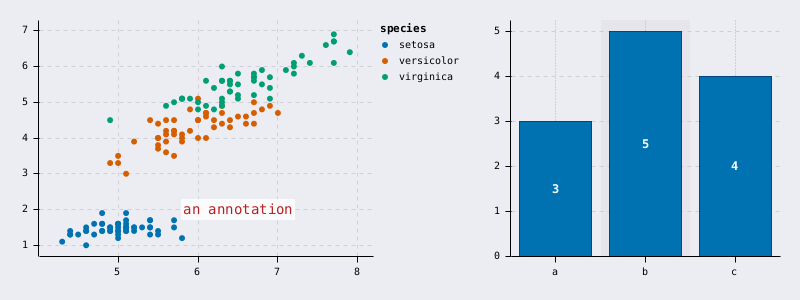
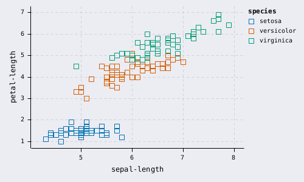

10 Theme
The theme holds every style default: backgrounds, grid lines, axes, legends, palettes, text roles and each chart kind’s style. build deep-merges a plot’s :theme over the default theme, so the plot’s theme names only what changes.
(ns reference.theme
(:require [fastmath.core :as m]
[cljplot2.chart :as chart]
[cljplot2.core :as plot]
[cljplot2.describe :as describe]
[notebook-utils :as nu]))The table below holds the iris flowers; most sections restyle a scatter plot of them (iris-plot):
Data: Edgar Anderson’s iris measurements, R datasets package iris (Anderson 1935; Fisher 1936); licence: Part of R (GPL-2 | GPL-3).
(def iris (nu/dataset :iris))| sepal-length | sepal-width | petal-length | petal-width | species |
|---|---|---|---|---|
| 5.1 | 3.5 | 1.4 | 0.2 | setosa |
| 4.9 | 3 | 1.4 | 0.2 | setosa |
| 4.7 | 3.2 | 1.3 | 0.2 | setosa |
| 4.6 | 3.1 | 1.5 | 0.2 | setosa |
| 5 | 3.6 | 1.4 | 0.2 | setosa |
| 5.4 | 3.9 | 1.7 | 0.4 | setosa |
| 4.6 | 3.4 | 1.4 | 0.3 | setosa |
| 5 | 3.4 | 1.5 | 0.2 | setosa |
| 4.4 | 2.9 | 1.4 | 0.2 | setosa |
| 4.9 | 3.1 | 1.5 | 0.1 | setosa |
| 5.4 | 3.7 | 1.5 | 0.2 | setosa |
| 4.8 | 3.4 | 1.6 | 0.2 | setosa |
| 4.8 | 3 | 1.4 | 0.1 | setosa |
| 4.3 | 3 | 1.1 | 0.1 | setosa |
| 5.8 | 4 | 1.2 | 0.2 | setosa |
| 5.7 | 4.4 | 1.5 | 0.4 | setosa |
| 5.4 | 3.9 | 1.3 | 0.4 | setosa |
| 5.1 | 3.5 | 1.4 | 0.3 | setosa |
| 5.7 | 3.8 | 1.7 | 0.3 | setosa |
| 5.1 | 3.8 | 1.5 | 0.3 | setosa |
| 5.4 | 3.4 | 1.7 | 0.2 | setosa |
| 5.1 | 3.7 | 1.5 | 0.4 | setosa |
| 4.6 | 3.6 | 1 | 0.2 | setosa |
| 5.1 | 3.3 | 1.7 | 0.5 | setosa |
| 4.8 | 3.4 | 1.9 | 0.2 | setosa |
| 5 | 3 | 1.6 | 0.2 | setosa |
| 5 | 3.4 | 1.6 | 0.4 | setosa |
| 5.2 | 3.5 | 1.5 | 0.2 | setosa |
| 5.2 | 3.4 | 1.4 | 0.2 | setosa |
| 4.7 | 3.2 | 1.6 | 0.2 | setosa |
| 4.8 | 3.1 | 1.6 | 0.2 | setosa |
| 5.4 | 3.4 | 1.5 | 0.4 | setosa |
| 5.2 | 4.1 | 1.5 | 0.1 | setosa |
| 5.5 | 4.2 | 1.4 | 0.2 | setosa |
| 4.9 | 3.1 | 1.5 | 0.2 | setosa |
| 5 | 3.2 | 1.2 | 0.2 | setosa |
| 5.5 | 3.5 | 1.3 | 0.2 | setosa |
| 4.9 | 3.6 | 1.4 | 0.1 | setosa |
| 4.4 | 3 | 1.3 | 0.2 | setosa |
| 5.1 | 3.4 | 1.5 | 0.2 | setosa |
| 5 | 3.5 | 1.3 | 0.3 | setosa |
| 4.5 | 2.3 | 1.3 | 0.3 | setosa |
| 4.4 | 3.2 | 1.3 | 0.2 | setosa |
| 5 | 3.5 | 1.6 | 0.6 | setosa |
| 5.1 | 3.8 | 1.9 | 0.4 | setosa |
| 4.8 | 3 | 1.4 | 0.3 | setosa |
| 5.1 | 3.8 | 1.6 | 0.2 | setosa |
| 4.6 | 3.2 | 1.4 | 0.2 | setosa |
| 5.3 | 3.7 | 1.5 | 0.2 | setosa |
| 5 | 3.3 | 1.4 | 0.2 | setosa |
| 7 | 3.2 | 4.7 | 1.4 | versicolor |
| 6.4 | 3.2 | 4.5 | 1.5 | versicolor |
| 6.9 | 3.1 | 4.9 | 1.5 | versicolor |
| 5.5 | 2.3 | 4 | 1.3 | versicolor |
| 6.5 | 2.8 | 4.6 | 1.5 | versicolor |
| 5.7 | 2.8 | 4.5 | 1.3 | versicolor |
| 6.3 | 3.3 | 4.7 | 1.6 | versicolor |
| 4.9 | 2.4 | 3.3 | 1 | versicolor |
| 6.6 | 2.9 | 4.6 | 1.3 | versicolor |
| 5.2 | 2.7 | 3.9 | 1.4 | versicolor |
| 5 | 2 | 3.5 | 1 | versicolor |
| 5.9 | 3 | 4.2 | 1.5 | versicolor |
| 6 | 2.2 | 4 | 1 | versicolor |
| 6.1 | 2.9 | 4.7 | 1.4 | versicolor |
| 5.6 | 2.9 | 3.6 | 1.3 | versicolor |
| 6.7 | 3.1 | 4.4 | 1.4 | versicolor |
| 5.6 | 3 | 4.5 | 1.5 | versicolor |
| 5.8 | 2.7 | 4.1 | 1 | versicolor |
| 6.2 | 2.2 | 4.5 | 1.5 | versicolor |
| 5.6 | 2.5 | 3.9 | 1.1 | versicolor |
| 5.9 | 3.2 | 4.8 | 1.8 | versicolor |
| 6.1 | 2.8 | 4 | 1.3 | versicolor |
| 6.3 | 2.5 | 4.9 | 1.5 | versicolor |
| 6.1 | 2.8 | 4.7 | 1.2 | versicolor |
| 6.4 | 2.9 | 4.3 | 1.3 | versicolor |
| 6.6 | 3 | 4.4 | 1.4 | versicolor |
| 6.8 | 2.8 | 4.8 | 1.4 | versicolor |
| 6.7 | 3 | 5 | 1.7 | versicolor |
| 6 | 2.9 | 4.5 | 1.5 | versicolor |
| 5.7 | 2.6 | 3.5 | 1 | versicolor |
| 5.5 | 2.4 | 3.8 | 1.1 | versicolor |
| 5.5 | 2.4 | 3.7 | 1 | versicolor |
| 5.8 | 2.7 | 3.9 | 1.2 | versicolor |
| 6 | 2.7 | 5.1 | 1.6 | versicolor |
| 5.4 | 3 | 4.5 | 1.5 | versicolor |
| 6 | 3.4 | 4.5 | 1.6 | versicolor |
| 6.7 | 3.1 | 4.7 | 1.5 | versicolor |
| 6.3 | 2.3 | 4.4 | 1.3 | versicolor |
| 5.6 | 3 | 4.1 | 1.3 | versicolor |
| 5.5 | 2.5 | 4 | 1.3 | versicolor |
| 5.5 | 2.6 | 4.4 | 1.2 | versicolor |
| 6.1 | 3 | 4.6 | 1.4 | versicolor |
| 5.8 | 2.6 | 4 | 1.2 | versicolor |
| 5 | 2.3 | 3.3 | 1 | versicolor |
| 5.6 | 2.7 | 4.2 | 1.3 | versicolor |
| 5.7 | 3 | 4.2 | 1.2 | versicolor |
| 5.7 | 2.9 | 4.2 | 1.3 | versicolor |
| 6.2 | 2.9 | 4.3 | 1.3 | versicolor |
| 5.1 | 2.5 | 3 | 1.1 | versicolor |
| 5.7 | 2.8 | 4.1 | 1.3 | versicolor |
| … | … | … | … | … |
(def iris-plot
{:data iris
:mapping {:x :sepal-length :y :petal-length :color :species}
:charts [(chart/scatter)]})The table below holds three levels with long names; the axes section turns them:
(def long-levels [{:k "a long level" :v 3} {:k "another long level" :v 5} {:k "the last level" :v 4}])| k | v |
|---|---|
| a long level | 3 |
| another long level | 5 |
| the last level | 4 |
The table below holds made-up fruit counts named by emoji; the axes section draws them in an emoji font:
(def fruit [{:fruit "🍎" :count 28} {:fruit "🍌" :count 55} {:fruit "🍇" :count 43} {:fruit "🍑" :count 91}
{:fruit "🍒" :count 81}])| fruit | count |
|---|---|
| 🍎 | 28 |
| 🍌 | 55 |
| 🍇 | 43 |
| 🍑 | 91 |
| 🍒 | 81 |
The table below holds the 14 levels of the default palette, one bar each; the palette section draws them:
(def palette-levels (mapv (fn [i] {:level (format "%02d" (inc i)) :n 1}) (range 14)))| level | n |
|---|---|
| 01 | 1 |
| 02 | 1 |
| 03 | 1 |
| 04 | 1 |
| 05 | 1 |
| 06 | 1 |
| 07 | 1 |
| 08 | 1 |
| 09 | 1 |
| 10 | 1 |
| 11 | 1 |
| 12 | 1 |
| 13 | 1 |
| 14 | 1 |
The table below holds a made-up budget of departments and teams; the text section draws it as a treemap:
(def budget [{:dept "science" :team "physics" :cost 40} {:dept "science" :team "biology" :cost 25}
{:dept "arts" :team "music" :cost 15} {:dept "arts" :team "theatre" :cost 10}])| dept | team | cost |
|---|---|---|
| science | physics | 40 |
| science | biology | 25 |
| arts | music | 15 |
| arts | theatre | 10 |
10.1 Plot
These keys style the canvas behind the plot. The plot below has a cream background and a wider margin:
(plot/render-image (assoc iris-plot :theme {:plot {:background [255 250 235] :margin 30}})
{:width 500 :height 300})
10.2 Panel box
These keys style each data panel’s box: its fill and border, the shading of alternate facet panels and the band of invalid values. The plot below fills the panel white and draws a thick dark border:
(plot/render-image (assoc iris-plot
:theme {:panel {:fill :white :border-color [60 60 60] :border-width 2}})
{:width 500 :height 300})
10.3 Grid lines
These keys draw the grid behind the charts. The plot below draws solid x lines, no y lines and light minor x lines:
(plot/render-image (assoc iris-plot
:scales {:x {:minor-ticks 4}}
:theme {:panel {:grid {:x {:color [150 150 200] :line-width 1 :dash :none}
:y :none
:minor {:color [200 200 220] :line-width 0.5 :dash :none}}}})
{:width 500 :height 300})
10.4 Axes
These keys set the x axis line, its ticks and its tick labels. The plot below turns the long level names 45 degrees and draws no ticks and no axis line:
(plot/render-image {:data long-levels
:mapping {:x :k :y :v}
:charts [(chart/bar)]
:theme {:axis {:x {:label-rotation 45 :tick-length 0 :line-color :none}}}}
{:width 500 :height 320})
The plot below draws the emoji levels in the bundled Noto Emoji font, larger, while the y axis keeps the :tick-label role’s font:
(plot/render-image {:data fruit
:mapping {:x :fruit :y :count}
:charts [(chart/bar)]
:theme {:axis {:x {:tick-label {:font "Noto Emoji" :size 22}}}}}
{:width 500 :height 300})
The y axis takes the same keys:
The plot below draws more y ticks, longer and red:
(plot/render-image (assoc iris-plot :theme {:axis {:y {:tick-spacing 25 :tick-color [200 0 0] :tick-length 10}}})
{:width 500 :height 300})
The plots below draw dense x ticks with no gap between their labels (left, where labels may touch) and with a wide gap (right):
(plot/render-image (plot/arrange (for [gap [0 12]]
(assoc iris-plot
:scales {:x {:ticks 20}}
:labels {:title (str ":tick-label-gap " gap)}
:theme {:axis {:x {:tick-label-gap gap}}}))
{:columns 2})
{:width 700 :height 280})
10.5 Strips
These keys style the facet strips. The plot below fills the strips dark blue without a border and writes their texts in white:
(def faceted-iris (assoc iris-plot :mapping {:x :sepal-length :y :petal-length :facet :species}))(plot/render-image (assoc faceted-iris :theme {:strip {:fill [70 90 140] :border-color :none}
:text {:strip {:color :white}}})
{:width 700 :height 280})
When a strip’s text doesn’t fit, the library shrinks it down to the :strip role’s :min-size and then cuts it with an ellipsis. In the plots below the first two row names fit; the third is cut later at the default 7 points (left) than at 9 (right):
(plot/render-image (plot/arrange (for [min-size [7 9]]
(assoc iris-plot
:mapping {:x :sepal-length :y :petal-length
:facet-row #(str "Iris " (:species %) (when (= "virginica" (:species %)) " (Anderson)"))}
:labels {:title (str ":min-size " min-size)}
:theme {:text {:strip {:min-size min-size}}}))
{:columns 2})
{:width 800 :height 400})
10.6 Facets
This key sets how far apart the facet panels sit. The plot below widens the gap:
(plot/render-image (assoc faceted-iris :theme {:facet {:gap 25}}) {:width 700 :height 280})
10.7 Multiplots
This key sets how far apart arranged plots sit; plot/arrange takes it in its :theme option. The plot below widens the gap:
(plot/render-image (plot/arrange [iris-plot (assoc iris-plot :mapping {:x :sepal-width :y :petal-width :color :species})]
{:columns 2 :theme {:multiplot {:gap 40}}})
{:width 800 :height 300})
10.8 Legend
These keys set the legend keys’ size and spacing, the legend box and the colour bar. The plot below draws larger, wider spaced keys in a white box with a gray border:
(plot/render-image (assoc iris-plot :theme {:legend {:key-size 24 :gap 10 :fill :white :border-color [150 150 150]}})
{:width 500 :height 300})
The plots below draw line keys at three values of :min-key-line-width; the lines in the panels are 1 pixel wide:
(plot/render-image (plot/arrange (for [min-key-line-width [0 2 4]]
(assoc iris-plot
:charts [(chart/line)]
:labels {:title (str ":min-key-line-width " min-key-line-width)}
:theme {:legend {:min-key-line-width min-key-line-width}}))
{:columns 3})
{:width 900 :height 260})
The plot below draws a colour bar with more, longer and thicker ticks:
(plot/render-image {:data iris
:mapping {:x :sepal-length :y :petal-length :color :petal-width}
:charts [(chart/scatter)]
:theme {:legend {:bar-ticks 10 :bar-tick-length 8 :bar-tick-width 2}}}
{:width 500 :height 300})
10.9 3D frame
This key sets the dash of a 3D box’s hidden edges; the box edges and axes take the x axis style ([:axis :x]). The plot below draws a surface of \(z = \sin(xy)\) over \([-2, 2]^2\) with dash-dot hidden edges and thicker axes:
(plot/render-image {:charts [(chart/surface {:f (fn [[x y]] (m/sin (m/* x y))) :domain {:x [-2 2] :y [-2 2]}})]
:labels {:title "$z = \\sin(xy)$"}
:theme {:frame-3d {:hidden-edge-dash [8 2 2 2]}
:axis {:x {:line-width 2}}}}
{:width 500 :height 400})
10.10 Palette
These keys set the default ranges of the aesthetic scales: colours for levels and for numbers, shapes, sizes, dashes and patterns. The level colours start with the Okabe-Ito colours, with a darker yellow and a gray in place of black, then repeat the first six lighter, the blue turned toward violet. The lighter six are weak as thin lines. The plot below takes the Tableau 10 colours and three other shapes:
(plot/render-image (assoc iris-plot
:mapping {:x :sepal-length :y :petal-length :color :species :shape :species}
:theme {:palette {:color :tableau-10 :shape [\s \A \V]}})
{:width 500 :height 300})
The plots below draw the default level colours as rendered and as a viewer with deuteranopia sees them (the render option :cvd). The closest pair is orange and the darker yellow (04, 07); the lighter six read as lighter versions of the first.
(plot/render-image {:data palette-levels :mapping {:x :level :y :n :color :level}
:charts [(chart/bar)] :legend false :labels {:title "default palette" :x nil :y nil}}
{:width 700 :height 200})
(plot/render-image {:data palette-levels :mapping {:x :level :y :n :color :level}
:charts [(chart/bar)] :legend false :labels {:title "the same, deuteranopia" :x nil :y nil}}
{:width 700 :height 200 :cvd :deuteranopia})
10.11 Text
These keys style the texts the library draws, by role. Each role is a text style: the keys of the Text style group plus :min-size. A label’s :role may also name a role of your own added under :text. The roles of labels drawn over fills (hierarchies, Venn counts, tile and bar values, correlation and pairwise numbers) default to the colour :contrast: black or white, whichever reads on the fill.
These roles style the titles, strips and axis texts. The plot below draws a larger italic title on the left, dark red axis titles and smaller tick labels:
(plot/render-image (assoc iris-plot
:labels {:title "Iris" :x "sepal length" :y "petal length"}
:theme {:text {:title {:size 20 :font-style :italic :align [:left :middle]}
:axis-title {:color [120 30 30]}
:tick-label {:size 8}}})
{:width 500 :height 320})
The plot below restyles the title’s role with keys of the Text style group: another font, a box and a wider inset:
(plot/render-image (assoc iris-plot
:labels {:title "Iris"}
:theme {:text {:title {:font "Serif" :size 16 :inset 10 :background [230 230 245]}}})
{:width 500 :height 300})
These roles style the legend texts. The plot below draws a smaller, plain gray legend title and italic labels:
(plot/render-image (assoc iris-plot :theme {:text {:legend-title {:size 9 :font-style :plain :color [100 100 100]}
:legend-label {:font-style :italic}}})
{:width 500 :height 300})
These roles style the labels of treemaps, partitions and circle packings. A colour you give applies on every cell alike. The plot below sets dark leaf labels, which are hard to read on the dark cells; that is why :contrast is the default:
(plot/render-image {:data budget
:mapping {:hierarchy [:dept :team] :value :cost}
:charts [(chart/treemap)]
:theme {:text {:treemap-group {:size 13 :font-style :bold-italic}
:treemap-leaf {:font-style :italic :color [40 40 60]}}}}
{:width 500 :height 300})
These roles style the texts of other charts. The plot below draws a larger red annotation on a white box and bold bar values in the bars’ middle (bar :value-label, :label-position):
(plot/render-image (plot/arrange [(assoc iris-plot
:charts [(chart/scatter) (chart/text {:x 6.5 :y 2 :text "an annotation"})]
:theme {:text {:annotation {:size 14 :color [178 34 34]
:background [255 255 255 200]}}})
{:data [{:k "a" :v 3} {:k "b" :v 5} {:k "c" :v 4}]
:mapping {:x :k :y :v}
:charts [(chart/bar {:value-label true :label-position :center})]
:theme {:text {:bar-value {:size 12 :font-style :bold}}}}]
{:columns 2 :widths [3 2]})
{:width 800 :height 300})
These roles style the labels of builders. The plot below draws larger bold sankey labels and smaller red names on a scatter-plot matrix (plot/pairs :diagonal :names):
(plot/render-image (plot/arrange [(plot/sankey [{:from "in" :to "a" :value 3} {:from "in" :to "b" :value 2}]
{:theme {:text {:sankey-label {:size 12 :font-style :bold}}}})
(plot/pairs (take 40 iris) {:variables [:sepal-length :petal-length]
:diagonal :names
:theme {:text {:pairs-name {:size 10 :color [178 34 34]}}}})]
{:columns 2})
{:width 800 :height 320})
10.12 Chart
These keys hold each chart kind’s style under [:chart kind]. Their keys are the chart’s style options, and the option cards on the chart’s page show these defaults. Options given to a chart override its theme style. Four kinds also take theme-only keys, listed in a Theme keys box on their page: violin plots, heatmaps, Venn diagrams and 3D clouds. The other [:chart name] entries are named styles: partial styles that a chart’s :theme-style merges over its kind’s style. Builders draw with their own named styles (:network-node, :tree-link …), and each builder’s page lists them in a Theme keys box.
The chart kinds; every kind but :text has a theme style (text charts take the text role :annotation):
(keys (describe/chart-constructors))(:bar
:beeswarm
:bin2d
:box
:bullet
:candlestick
:cloud
:contour
:correlation
:density
:dotplot
:ecdf
:extent
:field
:function
:histogram
:image
:line
:pack
:pairwise
:parallel
:partition
:polygon
:pp
:qq
:rect
:ribbon
:rug
:rule
:scatter
:segment
:smooth
:stripplot
:surface
:text
:tile
:treemap
:venn
:violin
:waffle)The plot below draws larger squares in every scatter chart:
(plot/render-image (assoc iris-plot :theme {:chart {:scatter {:shape \s :size 8}}})
{:width 500 :height 300})
source: notebooks/reference/theme.clj